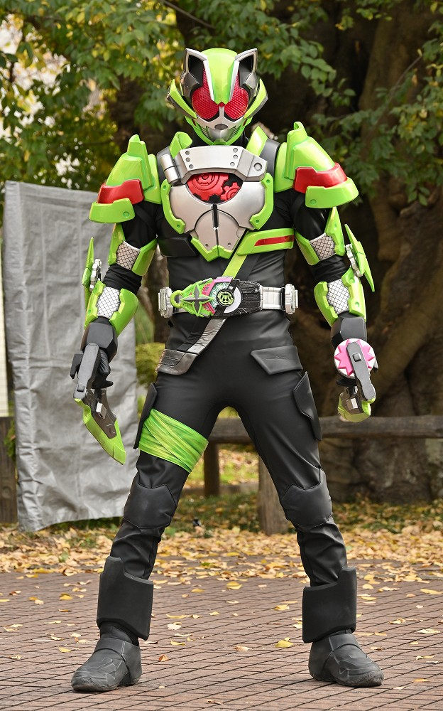
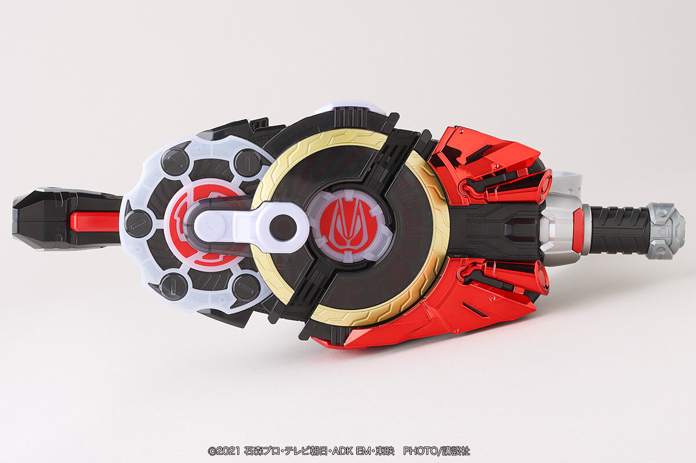
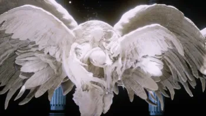
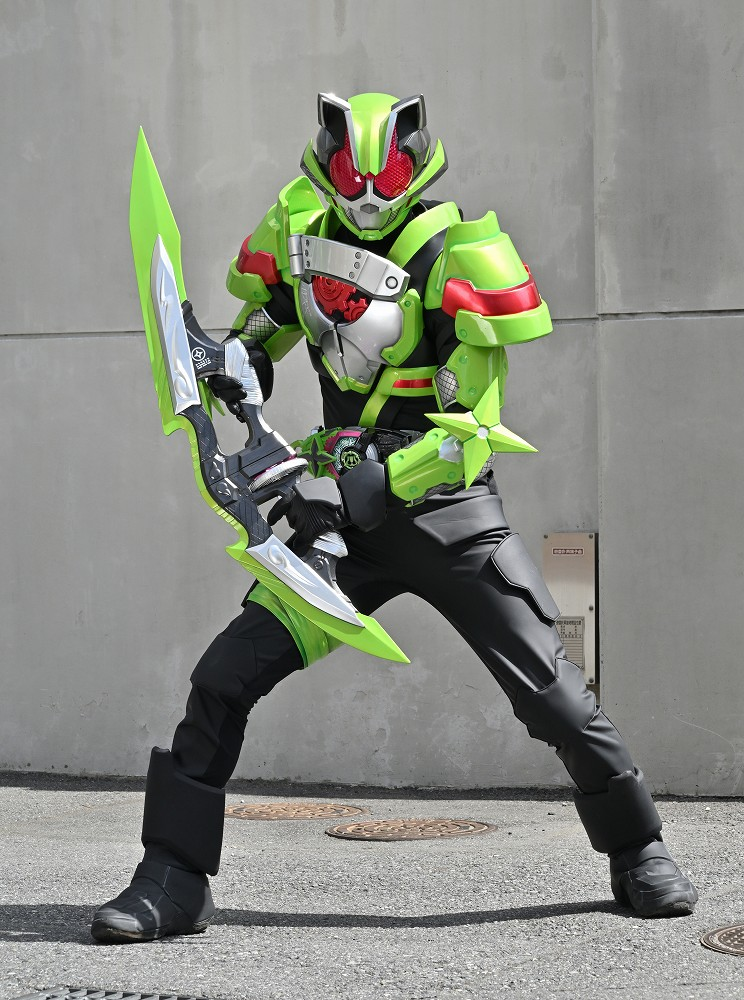
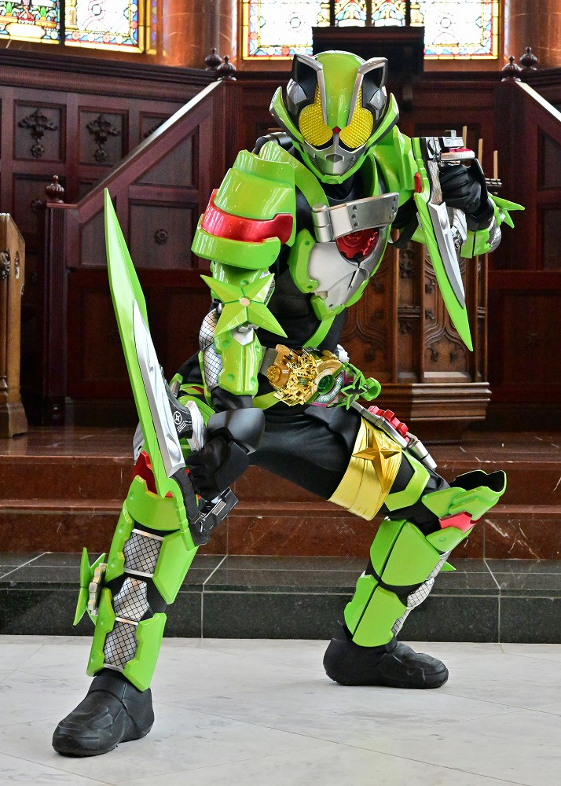
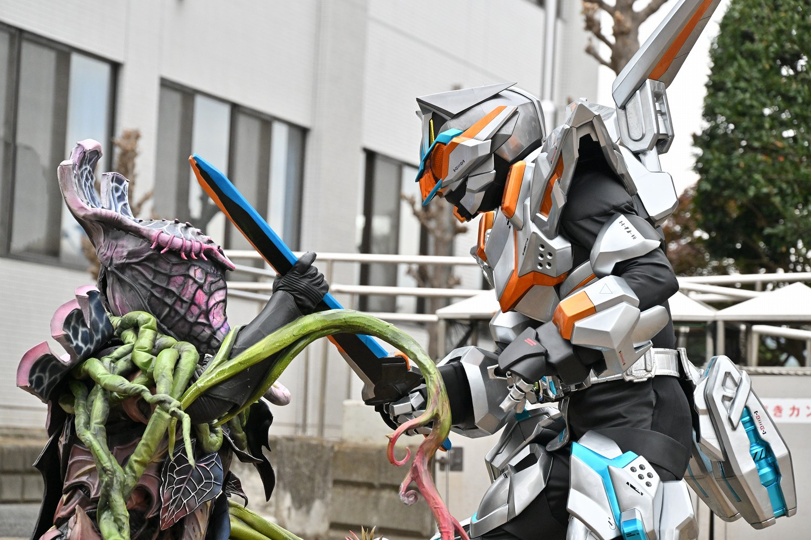
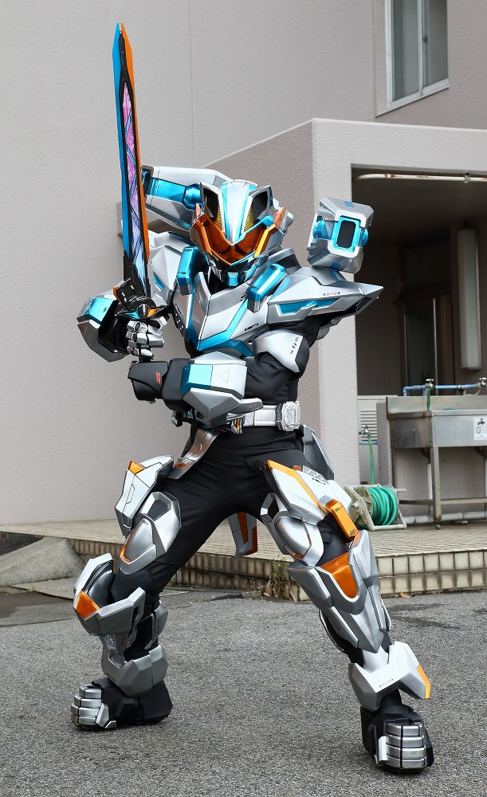
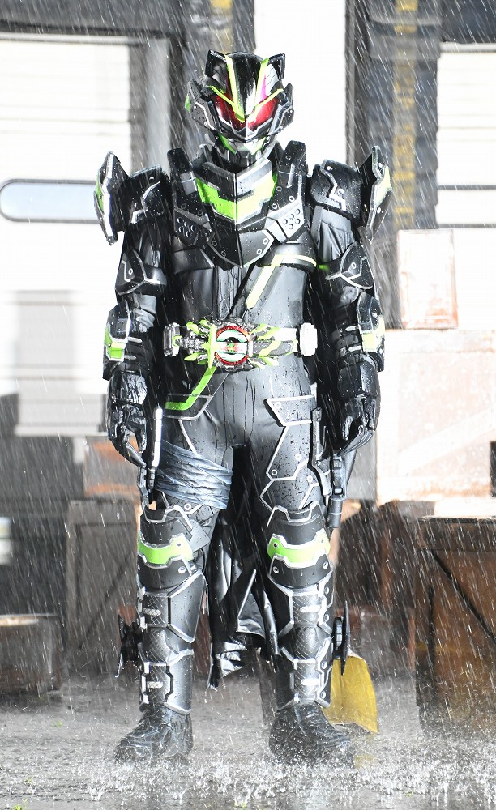

2022年から放送された「仮面ライダーギーツ」に登場する仮面ライダー
変身者は桜井景和。デザイアドライバーとレイズバックルを使い変身する。
実直に戦う心優しき狸。
基本形態はニンジャフォーム。
身長：193.2cm 体重：79.9kg パンチ力：2.1t キック力:4.9t ジャンプ力：ひと跳び19m 走力：100mを5.6秒程度

デザイアドライバーにバックルを最大2つ装着させ、変身する。
ドライバーを回転することで、腕が足に、足が腕になる。
腕に装着させていたバックルが足に装着される。
絵面がとんでもない。

デザイアグランプリ運営が保有している女神
女神に願いが書かれた紙を見せることでその願いをかなえてくれる。
願いに上限はなく、お金やモノはもちろん、地位や名誉、
世界の改変も可能。

ニンジャフォーム
「ニンジャ」レイズバックルで変身
隠れ身の術や分身の術など多彩な術を使い敵を翻弄する。
しかし、変身者の性格がやさしすぎるため、戦闘の際にこれらの術を使うことは少なく、
専用武器ニンジャデュアラーを使った、近接戦闘がメインとなる。

フィーバーニンジャフォーム
「フィーバー」と「ニンジャ」レイズバックルで変身
フィーバーはスロット型のバックルで出た目により、
発動する武装が違う。画像はニンジャを引いたもの。
上半身下半身共にニンジャの力を持ち、戦闘能力が大幅に向上している。

コマンドフォーム（ジェット）
「コマンド」ツインバックルで変身
レイジングソードを使用し、飛行しながら攻撃を行う。
マッハ１を超える速度で飛行可能。

コマンドフォーム（キャノン）
「コマンド」ツインバックルで変身
レイジングソードを使用し、両肩の大型キャノン砲で攻撃を行う。
キャノンとジェットは自在に切り替え可能。

ブジンソード
「ブジンソード」レイズバックルを使い変身
刀型拡張武器「武刃」を用いた、剣技を駆使して戦う。
多重装甲により、防御力も全形態中最高であり、攻防一体の戦闘を可能にする。
最初は悲しみと怒りにとらわれ、怒りのままに戦っていたが、最終的にそれを乗り越えた。
仮面ライダー一覧